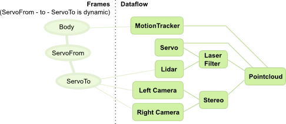
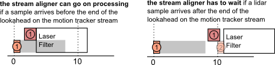

The Stream Aligner
- Stream Aligner Principles
- Period, latency and stream aligner timeout
- Using the stream aligner in oroGen components
The dataflow in component-based systems, like what happens in Rock, is done asynchronously: components process data as it arrives. Since different processing chains have different computation times, it means that our carefully timestamped data will most probably arrive out-of-order at the components that need it.
Let’s see, as an example, the following processing chain:

In this chain, sensors are fused through two paths. One path processes lidar data to remove outliers and body parts (laser filter). In another path, a stereo camera rig is used to generate a separate point clouds. The two informations are then merged to form a pointcloud that is represented in a frame that is centered on the body, but aligned to the world (i.e. a tabletop would look horizontal even if the robot’s body is on an incline). To achieve this, a motion tracker gives the pose of the body in the reference frame.
To add a bit more interesting effects, the lidar and cameras are mounted on a tilt unit with a single servo motor. The position of these sensors w.r.t. the body is therefore changing during operation.
If the robot moves during acquisition, it is obviously critical that the “right” association is made between the different channels. However, the different data processing paths have widely different processing times. Indeed, a realistic sample arrival diagram would look like:

In this diagram, both times, the pointcloud processing must make sure that it is processing data that is properly associated in time. Moreover, this diagram does not take into account that sensors have different acquisition latencies. It would not be uncommon, in such a processing pipeline, that the first lidar sample arrives after the second motion tracker (or servo) sample.
In Rock, there is one piece of software that handles these problems in a common way: the stream aligner. As we will see later, this method has its drawbacks, and might not be right for your problem. However, it has shown to be a good solution in most cases.
Stream Aligner Principles
Rock’s stream aligner (in the drivers/aggregator package) ensures that data is processed in order by
- queueing timestamped data, and
- calling registered callbacks in the order of the timestamps.
The general principle is therefore that:
- one callback is registered for each data stream
- data is pushed as it arrives in the corresponding streams. The leading assumption is that, on each stream, the timestamps are monotonous (they don’t go back in time).
- the respective callbacks get called when it is time to process the relevant samples. This is done only when the stream aligner determined that no sample from other streams can arrive with an earlier timestamp then the one that is being passed to a callback.
We’ll now see how the decision is being made.
Period, latency and stream aligner timeout
Let’s look at the example of the laser filter again:

On this diagram, the laser filter starts processing as soon as the lidar sample arrives. The stream aligner would do this only if it knows, when the first lidar sample arrives, that no motion tracker sample will arrive later with a timestamp before the lidar sample.
With no additional information allowing it to determine this, however, the stream aligner would have to wait that another sample arrives on the motion tracker before processing the first laser sample:

Which builds up latency …
To avoid this, the stream aligner allows to set a period parameter on each stream. This period parameter (which is also called lookahead in event-based systems) is the time after a sample in which there is a guarantee that no other sample arrives. It is called period in the stream aligner as it is the value of the input periods, for periodic inputs such as common robotic sensors. When visualizing the period, the above example looks therefore like:

Because processing based on the stream aligner is based on the fact that samples are passed in-order, the stream aligner must drop samples that arrive “in the past”, i.e. that arrive with an earlier timestamp that the last sample “played” by the stream aligner. So, it is better to give a period that is lower than the actual sensor period so that the aligner does not drop samples unnecessarily.
In order to not wait forever for samples that will never arrive (lost samples), the stream aligner also allows to set a timeout parameter, which is the highest latency that the aligner would allow to build up. When the latency induced by the stream aligner is higher than this value, the aligner starts playing queued samples regardless of the fact that, in principle, some samples should arrive on the other streams. If these samples do arrive anyway, they will therefore get dropped. This parameter is therefore a trade-off between the maximum latency that the processing chain can accept and how exact the result needs to be.
Using the stream aligner in oroGen components
While the stream aligner is a C++ library, its most interesting use-case in Rock is within oroGen components. A plugin extends orogen to ease its use.
This section will detail this usage, both at the orogen level and at the C++ level
Declaration
Each stream meant to be aligned is simply added in a stream_aligner block
within the task context using the align_port statement. The statement takes
the name of the input port to align, and a default period. Note that the safest
period is always zero.
The laser filtering example above would be declared with:
task_context "Task" do
input_port "lidar_samples", "/base/samples/LaserScan"
input_port "transformation", "/base/samples/RigidBodyState"
output_port "filtered_samples", "/base/samples/LaserScan"
stream_aligner do
max_latency 0.5
align_port "lidar_samples", 0
align_port "transformation", 0
end
port_driven
end
The usage of this plugin requires the drivers/orogen/aggregator package. The
package's manifest.xml must therefore contain:
<depend package="drivers/orogen/aggregator" />
The following statements are available in the stream_aligner block:
max_latency(timeout_in_seconds): The max_latency statement sets the timeout of the stream aligner. It can be overriden through a generatedaggregator_max_latencyproperty on the task.align_port(name, period): Registers a stream on the task’s stream aligner, and pushes all the data that arrives on the specified port to this stream. The provided period is the default period for the stream. It can be overriden at runtime by setting a generated property called${port_name}_period(e.g.lidar_samples_periodfor thelidar_samplesstream)
Usage in C++
For each stream declared with align_port, a C++ callback method, of the form
void stream_nameCallback(timestamp, sample) is generated. For instance, for
the lidar_samples port above:
void lidar_samplesCallback(base::Time const& timestamp,
base::samples::LaserScan const& sample)
{
// timestamp is the current time of the stream aligner. It is in most cases
// the sample's time, but might not be if a timeout was reached.
}
Because these callbacks are in the "user" part of the code, oroGen cannot update
them automatically. If you add or remove streams after the first code
generation, you must update the files in tasks/ yourself, using if needed the
templates generated in templates/tasks/
Ports that are processed by the stream aligner MUST NOT be read "manually" by accessing the port. Use the callbacks to access new samples
When using the stream aligner, it is critical that the call to the parent's class
updateHook is done first within updateHook. This is indeed where the stream aligner
processing happens
void Task::updateHook() {
TaskBase::updateHook(); // call this first
}